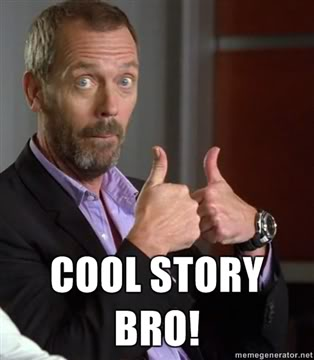

Morpheme-based Lexicon: We’re storing chunks of words and recombining them at the time of speech
Word-based Lexicon: We’re storing words as chunks, and breaking them apart when we need to
What is frequency?
Frequency and Basic Forms
Frequency and Productivity
Frequency and Morphological Marking
Frequency and Oddity
We use ‘to be’ much more than ‘to defenestrate’
We talk about plural cars more often than plural octopodes
These distributions are really unequal!
“In a given corpus of natural language, the frequency of a word is inversely proportional to its rank in the frequency table”
The most common words are really common!

“How often does a word occur in natural language?”
This is often checked using text corpora
A large body of natural language text collected for linguistic inquiry
Brown corpus: One million words
EnronSent Corpus: 14 million words
OpenANC Corpus: 15 million words (annotated)
NY Times corpus: 1.8 million articles
Corpus of Contemporary American English (COCA): 560 million words
iWeb Corpus: 14 billion words
COCA Frequency of ‘are’: 2,567,146 tokens
‘walk’: 67,178 tokens
‘walked’: 58,702 tokens
‘scratch’: 6,020 tokens
‘cray’: 347 tokens
‘chamfer’: 33 tokens
‘yeet’: 0 tokens
Words that almost never show up in large amounts of text are probably quite rare
We can calculate and quantify the relative frequency of words

We’ve been making an assumption: More morphology makes it ‘less basic’
‘cat’ is basic, ‘cats’ is derived
‘govern’ is basic, ‘government’ is derived
‘equal’ is basic, ‘unequalled’ is derived
The base form is the simplest form observed!
Modifications to the simplest morphological form result in a derived form!
Some kinds of words never surface without additional morphology
Some words are seldom found without additional morphology
Remember, we might be storing whole words
Another approach: The most frequent form is the most basic form!
Govern (3,856) vs.
Settle (13,201) vs.
‘Govern’ is the basic form in a structure-based approach
‘Government’ is the basic form in a frequency-based approach
The most frequent words are easier and faster to access
We preferentially hear frequent words in ambiguous situations
We learn more frequent forms more easily
Common use makes for stronger mental representation!
Frequency is a reasonable way to think about ‘basicness’
… but does frequency win us anything else?
glentap - ‘cried’
klampe - ‘sung’
flutap - ‘yelled’
slapte - ‘grabbed’
vlagre - ‘wakened’
beemtap
breemte
bleemte
veemte
wugiz
Bar - ‘noodle’ Barfalb - ‘noodly’
Ger - ‘rock’ Gerfalb - ‘rocky’
Fes - ‘sponge’ Fesfalb - ‘spongey’
Fest - ‘party’ Festfalb - ‘party-like’
Ren - ‘knight’ Renfalb - ‘knight-like’
Ruplen
Ruplab
Rupfalb
Rupples
Rupopodes
‘oxen’, ‘children’, ‘brethren’, ‘women’
Speakers no longer recognize ‘-en’ as a plural marker
Words that are never seen die off!
The base form needs to be common enough that speakers ‘see’ the pattern
Hay and Baayen (2002) describe one way to calculate this
When the majority of words participating in a morphological pattern are more frequent than their bases, then that morphological pattern is not likely to be productive
When the majority of words participating in a morphological pattern are less frequent than their bases, then that morphological pattern is likely to be productive
This is referred to as the parsing ratio
Modern/Modernity, Secure/Security, Insane/Insanity
17% of complex words containing ity are less frequent than their bases
83% of complex words containing ity are more frequent than their bases
-ity has a parsing ratio of 0.17
The complex form (with -ity) is more basic!
-ity has a parsing ratio of 0.17
-ment has a parsing ratio of 0.24
-ery has a parsing ratio of 0.34
-er has a parsing ratio of 0.5
-like has a parsing ratio of 0.68
-less has a parsing ratio of 0.86
It shows us why we ‘see’ some affixes in the pile more than others
It gives us a way to quantify how ‘easy to parse’ a new word would be
It helps us understand affix (and word!) lexicalization!
Singulars happen more often than plurals
Subjects happen more often than Objects
3rd Person Singular forms are really common
This combines with another fundamental truth of human language

Memories vs. Mammaries
Artillery in and out of the military
This is really neat!
Singulars happen more often than plurals
Subjects happen more often than Objects
3rd Person Singular forms are really common
This is a general pattern…
We see more zero-marking in frequent forms
We see shorter forms for more frequent inflections
It’s not universal, but it’s common!
We see less syncretism in frequent forms
Frequent meanings are more differentiated
sing
sang
sung
singed
I have no idea
ping
pung
pang
pinged
I have no idea
Across languages, verbs like ‘be’, ‘do’, ‘go’, ‘come’, and ‘say’ are most likely to have irregular morphology
English ‘to be’ has ‘am, is, are, was, were, be, being, been’
Spanish ‘ser’ (‘to be’) has se-, fu-, es- allomorphs
… and that can only happen when they’re regularly encountered
If speakers rarely encounter an unusual form, the irregular form won’t persist
Children will naturally regularize unusual patterns
Frequency can protect words from analogical change!
The can was yaughten down the hallway. The can was yaughten down the hallway. The can was yaughten down the hallway. The can was yaughten down the hallway. The can was yaughten down the hallway. The can was yaughten down the hallway. The can was yaughten down the hallway. The can was yaughten down the hallway. The can was yaughten down the hallway. The can was yaughten down the hallway. The can was yaughten down the hallway. The can was yaughten down the hallway. The can was yaughten down the hallway. The can was yaughten down the hallway. The can was yaughten down the hallway. The can was yaughten down the hallway. The can was yaughten down the hallway. The can was yaughten down the hallway. The can was yaughten down the hallway. The can was yaughten down the hallway. The can was yaughten down the hallway. The can was yaughten down the hallway. The can was yaughten down the hallway. The can was yaughten down the hallway. The can was yaughten down the hallway. The can was yaughten down the hallway. The can was yaughten down the hallway. The can was yaughten down the hallway. The can was yaughten down the hallway. The can was yaughten down the hallway. The can was yaughten down the hallway. The can was yaughten down the hallway. The can was yaughten down the hallway. The can was yaughten down the hallway. The can was yaughten down the hallway. The can was yaughten down the hallway. The can was yaughten down the hallway. The can was yaughten down the hallway. The can was yaughten down the hallway. The can was yaughten down the hallway. The can was yaughten down the hallway. The can was yaughten down the hallway. The can was yaughten down the hallway. The can was yaughten down the hallway.
If we don’t see a word often, we’ll assume it works ‘like the other words’
Strange characteristics become less strange
Rare and weird words get unweirded!
It lets us quantify word usage in practice
It helps us find basic forms
It helps us understand productivity
It helps us understand why we mark the things we do
… and it keeps words short and irregular